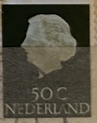
| SOURCE | TITLE| IMAGE MATCH | click to source page |
| eBay | Brown Royalty Used Canadian Stamps for sale | eBay |  |
| eBay | Netherlands Postage ~ Queen Juliana ~ Brown 10₵ Stamp ~Used/Posted ~1953 ~ D04 | eBay |  |
| eBay | Royalty Elizabeth II (1952-2022) Era Used Canadian Stamps for sale | eBay |  |
| eBay | Black Elizabeth II (1952-2022) Era Canadian Stamps for sale | eBay |  |
| HipStamp | Netherlands - # 354 - Queen Juliana - 50ct - MLH - (P5) | Europe - Netherlands & Colonies, General Issue Stamp / HipStamp | 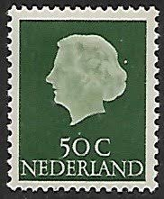 |
| Colnect | Netherlands : Stamps [Year: 1965] [1/4] : Colnect 📮 |  |
| Discover 17 Nederlands - New Guinea Stamps and postage stamps ideas on this Pinterest board | postal stamps, stamp, guinea and more | 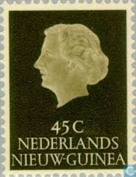 | |
| definitives.org | Issue Queen Juliana 1953 Netherlands Stamps catalogue - standard mail | Definitives.org - An ordinary world | 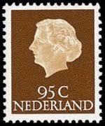 |
| eBay | Netherlands Postage ~ Queen Juliana ~ Brown 10₵ Stamp ~Used/Posted ~1953 ~ B07 | eBay |  |
| eBay | Brown Royalty Elizabeth II (1952-2022) Era Canadian Stamps for sale | eBay | 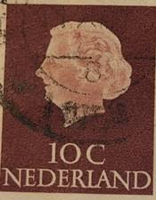 |
| Alamy | Netherlands queen juliana stamp hi-res stock photography and images - Alamy | 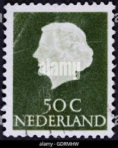 |
| iStock | Stamp Printed In Netherlands Shows Portrait Of Queen Juliana Stock Photo - Download Image Now - iStock | 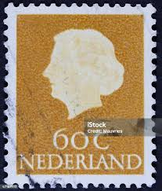 |
| eBay | Netherlands Postage ~ Queen Juliana ~ Brown 10₵ Stamp ~ Posted ~1953 ~ B182 | eBay | 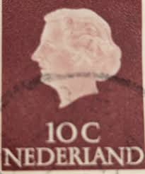 |
| Easy Live Auction | A coin album of Dutch coinage 1948-1980, 1 cent to 25 cents | 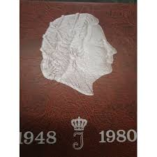 |
| eBay | Netherlands - 1953 - Queen Juliana - 20¢ - #2409 | eBay | 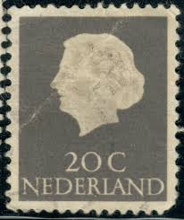 |
| eBay | Netherlands Postage ~ Queen Juliana ~ Brown 10₵ Stamp ~Used/Posted ~1953 ~ B06 | eBay |  |
| eBay | Brown Royalty Elizabeth II (1952-2022) Era Canadian Stamps for sale | eBay | 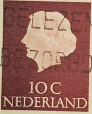 |
| frei-immopool.ch | Birds Themed Stamp Collection West-Guinea (UNTEA) 1II-19II (complete Issue) Unmounted Mint Collector Philately Set | 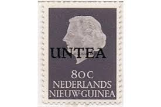 |
| Amazon.com | Amazon.com: Netherlands 620X X A-629X X A (Complete.Issue.) unmounted Mint/Never hinged ** MNH 1953 Juliana (Stamps for Collectors) : Toys & Games | 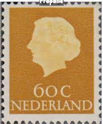 |
| bol.com | Briefkaart met afbeelding koningin Juliana postzegel | bol | 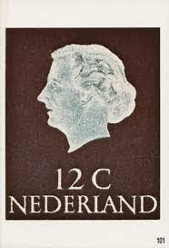 |
| eBay | Netherlands Postage ~ Queen Juliana ~ Brown 10₵ Stamp ~Used/Posted ~1953 ~ D01 | eBay | 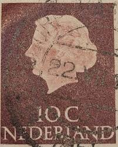 |
| allnumis.com | 35 Cent 1954, Queen Juliana - Netherlands - Stamp - 9934 |  |
| Imperium Stamps Ltd | NETHERLANDS-1960 Cultural & Social Fund Flowers Set Sg 893-897 UNMOUNTED MINT V40854 | Imperium Stamps Ltd | 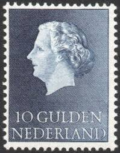 |
| HipStamp | Netherlands #352 40c Queen Juliana - Used | Europe - Netherlands & Colonies, General Issue Stamp / HipStamp |  |
| eBay | Netherlands Postage ~ Queen Juliana ~ Brown 10₵ Stamp ~Cancelled/Posted ~1953-12 | eBay |  |
| Etsy | 1953-1967 Vintage 20cent Stamps, Queen Juliana Silhouette, Blue - Gray Used Stamps for Collage, Art Projects, Journaling Etc. - Etsy | 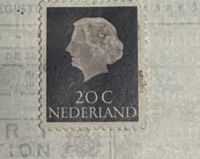 |
| eBay | NETHERLANDS 354 - Queen Juliana "1953 Blue Green" (pb10753) | eBay | 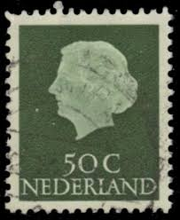 |
| eBay | Netherlands Postage ~ Queen Juliana ~ Brown 10₵ Stamp ~Cancelled/Posted ~1953-07 | eBay |  |
| Find Your Stamps Value | Value of kings and queens great britain Stamp series 23 karat gold stamps | 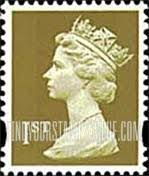 |
| eBay | Netherlands - 1953 Queen Juliana #2 | eBay | 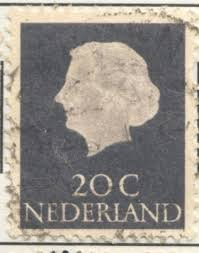 |
| eBay | Las mejores ofertas en Brown Isabel II (1952-2022) era estampillas de Canadá | eBay |  |
| WorthPoint | ORIGINAL INGERSOLL 1953 ELIZABETH II CORONATION POCKET WATCH.Collectables royal | #513033008 | 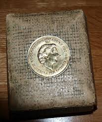 |
| David Coin | Winkel - 第69页共780页- David Coin | 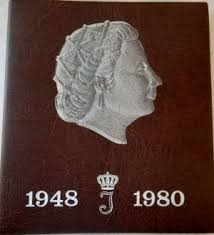 |
| eBay | NETHERLANDS #347 1953 20c QUEEN JULIANA MINT VF NH O.G | eBay | 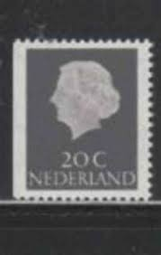 |
| Todocolección | holanda ned.-indie 1913 königin wilhelmina - Buy Antique stamps of Netherlands on todocoleccion | 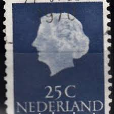 |
| Old-Stamps.com | Queen Juliana - Nederland / Nederland 1965 |  |
| Dreamstime.com | 184 Beatrix Portrait Stock Photos - Free & Royalty-Free Stock Photos from Dreamstime - Page 3 | 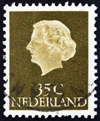 |
| Todocolección | 1954 holanda reina juliana - Buy Antique stamps of Netherlands on todocoleccion |  |
| The RainKey | Worldwide Stamps – Page 16 – The RainKey | 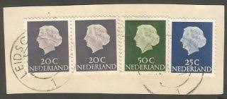 |
| stampsandstuff.net | Stamps from Netherlands | 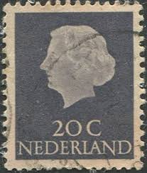 |
| HipStamp | Netherlands #354 50c Queen Juliana | Europe - Netherlands & Colonies, General Issue Stamp / HipStamp | 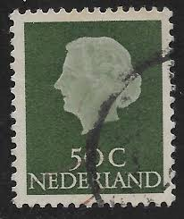 |
| Todocolección | paises bajos 1939 centenario de los ferrocarril - Buy Antique stamps of Netherlands on todocoleccion |  |
| lastdodo.com | Reseda green Stamp catalogue - LastDodo | 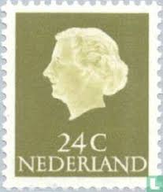 |
| sellosmundo.com | Netherlands 20c 1965. Netherlands Europe ref. 163731 |  |
| American Society for Netherlands Philately | Magazine of the American Society for Netherlands Philately Volume 45/2 |  |
| lastdodo.com | Munten Collection albums catalogue - LastDodo | 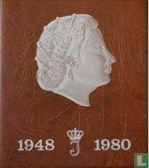 |
| iStock | Orange Logo On Guitar Amplifier Stock Photo - Download Image Now - Amplifier, Brand Name, British Culture - iStock | 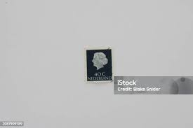 |
| eBay | Netherlands Postage ~ Queen Juliana ~ Brown 10₵ Stamp ~Cancelled/Posted ~1953-15 | eBay | 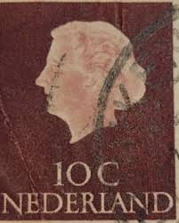 |
| Shutterstock | 26 Lippe Biesterfeld Royalty-Free Images, Stock Photos & Pictures | Shutterstock |  |
| LastDodo | Munten verzamelalbums catalogus - LastDodo | 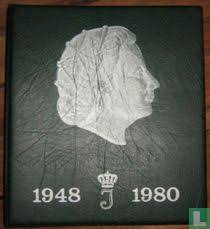 |
| iStock | Vintage Antique Old Postage Stamp From Netherlands Stock Photo - Download Image Now - Antique, Color Image, Cut Out - iStock | 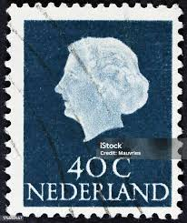 |
| Shutterstock | Canada Post Stamp: Over 4,472 Royalty-Free Licensable Stock Photos | Shutterstock |  |
| Shutterstock | 11+ Thousand Stamp Netherlands Royalty-Free Images, Stock Photos & Pictures | Shutterstock |  |
| Shutterstock | Netherlands Circa 1953 Stamp Printed Netherlands Stock Photo 120794884 | Shutterstock | 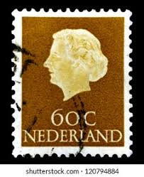 |
| eBay | NETHERLANDS #360A 1953 95c QUEEN JULIANA MINT VF NH O.G | eBay | 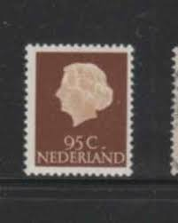 |
| Jace Stamps | Netherlands Scott 355 Used - C$0.15 : Jace Stamps, Quality Stamps since 1997 | 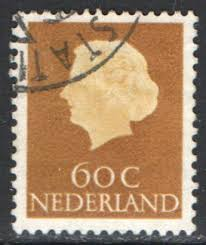 |
| eBay | NETHERLANDS #344 1953 10c QUEEN JULIANA MINT VF NH O.G | eBay | 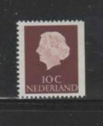 |
| eBay | Netherlands Postage ~ Queen Juliana ~ Brown 10₵ Stamp (2) ~ Posted ~1953 ~ Q41 | eBay | 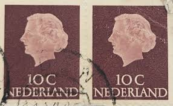 |
| Dreamstime.com | 890 Dutch Letter Old Stock Photos - Free & Royalty-Free Stock Photos from Dreamstime - Page 10 | 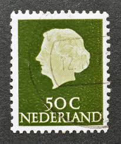 |